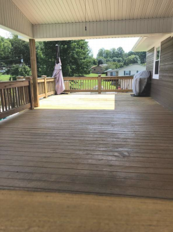

1234 Main St.
Buyer Name
Driveway and Walkway
The roof covering was comprised of architectural composition shingles. Architectural shingles, also called dimensional shingles, are thicker and heavier (often 50% more) than traditional 3-tab shingles. These 'premium' shingles are manufactured by starting with a fiberglass reinforcement mat, multiple layer of asphalt are added over the mat, and lastly ceramic granules are added over the upper layer of asphalt for protection against the elements (wind, rain, UV rays from the sun). Architectural shingles typically have higher wind resistance numbers than their 3-tab counterparts, and resist leaks better. 30 - 50 year warranties are common with these shingles, but the warranty is highly prorated after 25 - 30 years. Typical replacement is usually needed 23 - 28 years after the initial installation.
Due to the many variables which affect the lifespan of roof covering materials, I do not estimate the remaining service life of any roof coverings. This is in accordance with all industry inspection Standards of Practice.The following factors affect the lifespan of roof covering materials:
- Roofing material quality: Higher quality materials, will of course, last longer.
- Number of layers: Shingles installed over existing shingles will have a shorter lifespan.
- Structure orientation: Southern facing roofs will have shorter lifespans.
- Pitch of the roof: Shingles will age faster on a lower pitched roof in comparison with higher pitches.
- Climate: Wind, rain, and snow will impact the lifespan of the roof.
- Color: Shingles that are darker in color will have a shorter lifespan, than lighter colored shingles.
- Attic Ventilation: Poorly vented attic spaces will decrease shingle life due to heat.
- Vegetation conditions: Overhanging trees, branches, contacting the roof, or leaf cover drastically shorten lifespan.
Asphalt shingles must be installed to manufacturers' recommendations, for the warranty coverage to be upheld. These installation requirements vary widely from manufacturer to manufacturer, and across the multitude of different shingle styles manufactured. I will inspect the roof to the best of my ability, but confirming proper fastening, use and adequacy of underlayment, and adequacy of flashing is impossible as these items are not visible, Damaging and invasive means would have to be carried out to confirm proper installation. Therefore, the inspection of the roof is limited to visual portions only.
Roof Surface Condition:
Shingles Information
The shingles were inspected at visible portions for excessive granule loss, signs of curling or delamination, loss of adhesion between the shingles, and any other signs of damage or excessive age. The shingles appeared to be in satisfactory condition, allowing for normal wear and tear, at the time of inspection. No deficiencies were observed unless otherwise noted in this report.
Professional Home Inspections
Page 0 of 0